Fine-tuning a ViT model
Posted on November 9, 2024

But overfitting is the strongest opponent in history... would you lose?

In this post, I'll be going through the steps I went through to fine-tune OpenAI's clip-vit-large-patch14 vision transformers on the CIFAR-10 dataset. In a future post, I would like to detail how visual transformers work, especially the encoder and decoder. To train the model, I used Google Colab, but you can train this model on your personal device if you have an NVIDIA GPU. I trained the model on a very small training set on my own device, and the only problem was speed.
First, open Google Colab and make sure you're connected to the T4 GPU. Google limits your runtime and computing power, so make sure not to waste it. Next, install and import all the necessary libraries
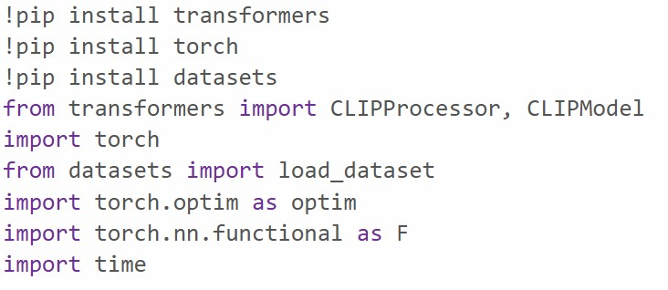Next, load the dataset into Colab using the transformers built in data loader. You can also manually download the tar file from the internet and extract it. In this cell, we're also creating 2 dictionaries which will help us convert from the text labels to their corresponding ids, and vice versa. The dataset is automatically batched into a 50,000 image training set and a 10,000 image test set
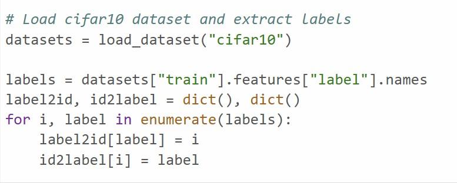We will then load in the actual model from hugging face. We are using a visual transformer created by OpenAI
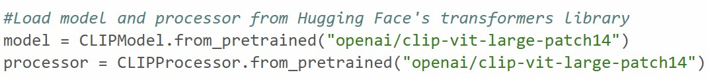Here is the first function we will need to write ourselves. This function will process a set number of images and run them through the model. When working with weaker GPUs, even an RTX 4070, this set of images will need to be split into batches so that the model does not overwhelm the VRAM. The model is set to run computations on the GPU detected by Pytorch. If you're running on your own device, you need to download the correct version of Pytorch, as well as the CUDA version that works with your GPU. On my own device, I use CUDA 12.1.
For the actual implementation of the code, we first calculate how many batches we will need to run by dividing the total number of images we want to test our model on by how large we want our batch size to be. Normally batch sizes are powers of 2 (i.e. 2, 4, 8, 16, 32, 64), but I just used 10. We create a temporary subset of these images, which will serve as our current batch. The rest is rather self-explanatory, where this subset is processed and ran through the model for our inference.
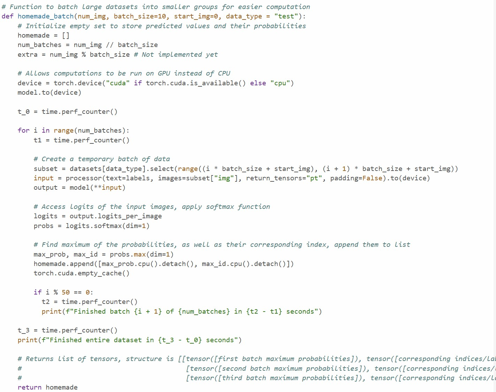Side Note: Typically, this model compares visual and textual similarities. In other words, given an input image and multiple labels, the model determines how similar the label is to what is being displayed in the image. In this case, we input the image from the CIFAR-10 dataset and set the labels to be the labels provided in the model. The model then spits out the similarities between the image and all the labels.
For example, let's say we want the model to determine if an image is a dog, cat, or bunny (NOT what is happening in our case). Let's say 0 is the id for the label "dog", 1 is the id for the label "cat", and 2 is the id for the label "bunny". If we run the process an image of a cat, as well as the labels ["dog", "cat", "bunny"], the model might output: tensor[0.52, 0.89, 0.18]. The position these values are in are directly related to the labels. This means that the model has correctly captured the relation between the image and the label "cat", finding there to be 89% similarity.
However, let's say we're running thousands of images of dogs, cats, and bunnies through the model. In this case, we may only want to know what the model thinks the image is showing. We can take the softmax of this tensor to compute the probability the value in each index is correct. Remember that the index of a value in the list is the id of the label. Finally, we can extract the max value from the tensor, as well as its index in the list. This provides what the model thinks the image is showing, as well as the probability that the model is correct.

Although we extracted all the useful information, we now should clean the data up and get it ready to be processed. The data returned from the previous function is still stored in individual batches. First, we will initialize an empty list to store the cleaned data. The first for loop just moves us from one batch to the next, and the second for loop actually reads the data in these batches. We will keep order of all the images by counting through them 1 by 1. We then access the maximum probability for the image, as well as its probability of being correct. We store this information in a list, and append it to the original list. We go through all the images this way.
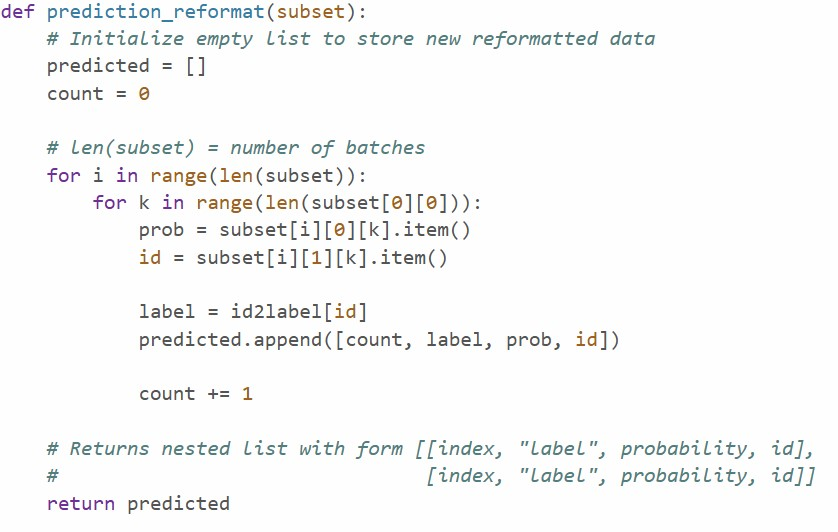With this clean data, we can finally compute how accurate our model is! First, let's initialize 2 dictionaries where each label has the value 0. One of these dictionaries will help us keep track of how many of each type of image we have seen. The other will keep count of incorrect guesses and what the model incorrectly predicted. We will also initialize two variables, total and correct, to compute accuracy later on. For each prediction, we will compare what our model predicted with the ground truth. If they are the same, we will add 1 to the correct and total. If they are different, we will only add 1 to the total and add the incorrect guess to the incorrect dictionary.
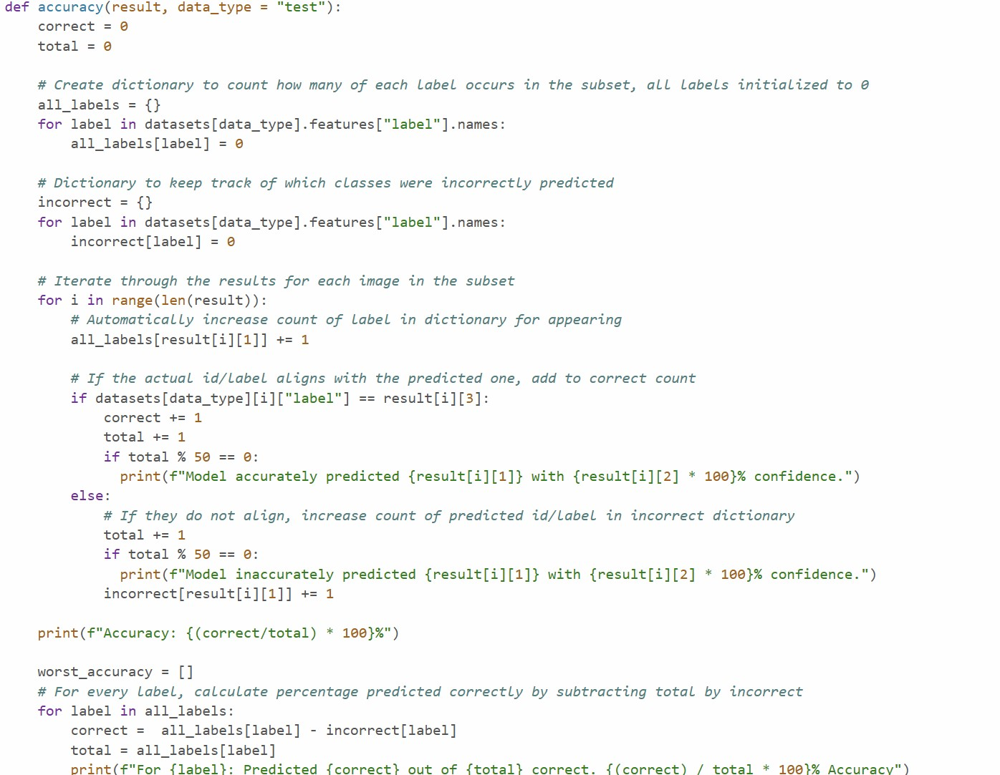For ease of access in the future, we can combine the previous two functions into one.
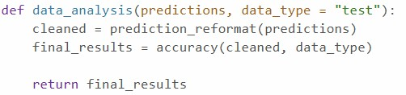Here's the real meat of this project. I don't believe that this model has a built-in fine-tuning function, nor does the Hugging Face transformer's library built-in fine-tuning function support this model. To fine tune this model, we will be writing our own training function. The next step in my plan is to write the softmax and cross entropy loss functions myself, but currently, I am using the built-in functions found in Pytorch. First, we will separate the training set into batches again (the old batch function was for inference).
We are using the Adam optimizer, which is a combination between standard gradient descent with momentum and RMSProp. We set the model to run on the GPU again and set the mode to train. The first few steps are the same as the inference from the first function, but we will extract the logits from the images and text separately.
From here, we also find the ground truths and put them into a seperate tensor. We calculate the loss between the logits of the image and ground truths, and do the same for the labels using the cross loss entropy function. The total loss of the function is equal to these values added together. We will clear the gradient accumulation from former epochs, use backpropogation to calculate the gradients, and then update the weights. This whole process is repeated for the number of epochs the user decides to train the model on.
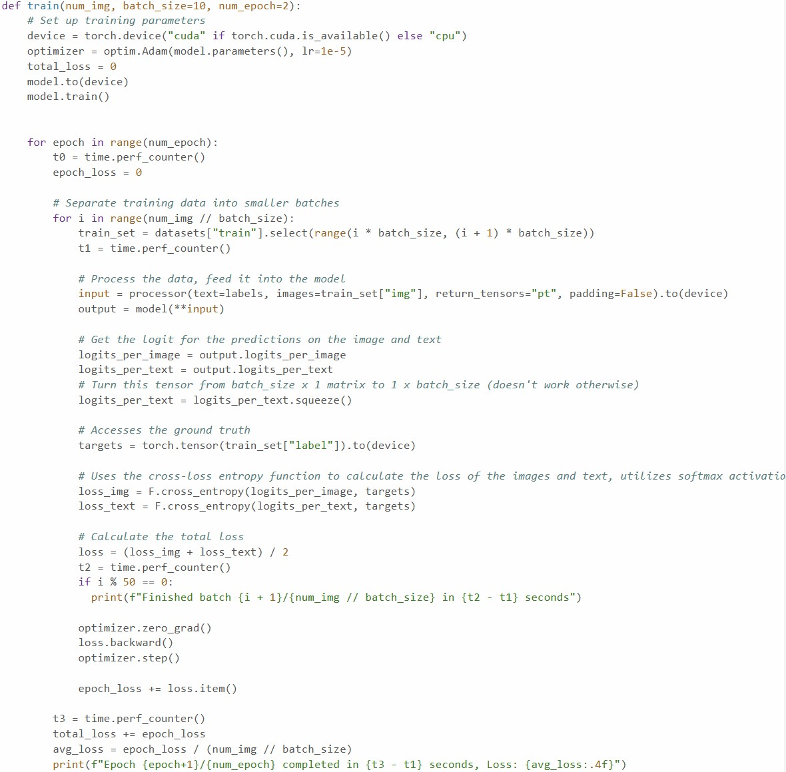Let's see if this training function works! First, let's see how well the model runs before training.
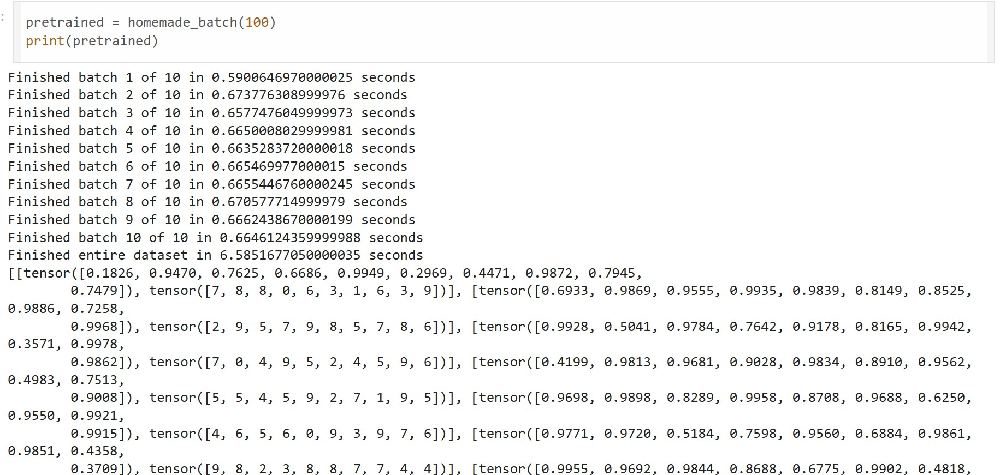 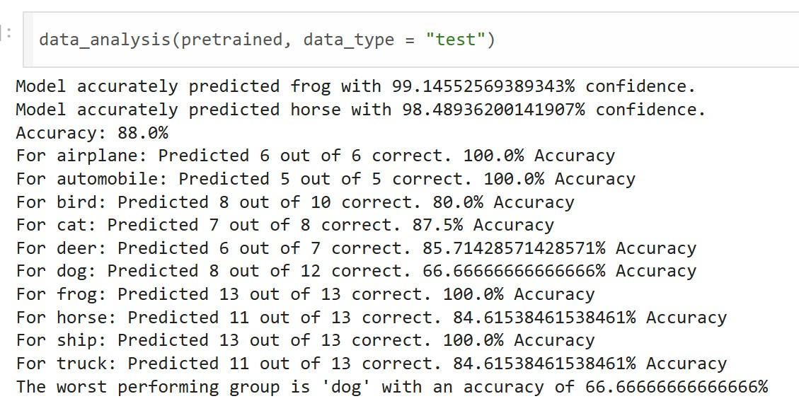Hey, that's pretty good. Let's train this jit and see what happens.
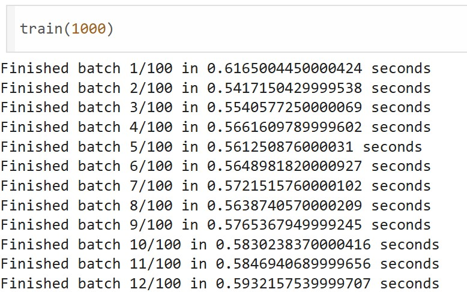Hey, that's pretty good. Let's train this jit and see what happens.
Don't forget to set the model's mode back to evaluation
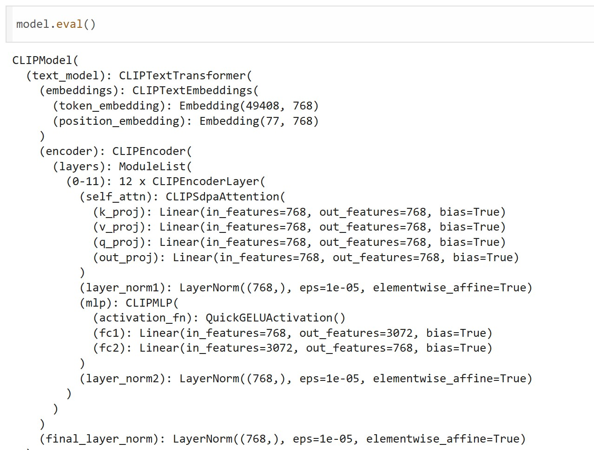Hey, that's quite the improvement!
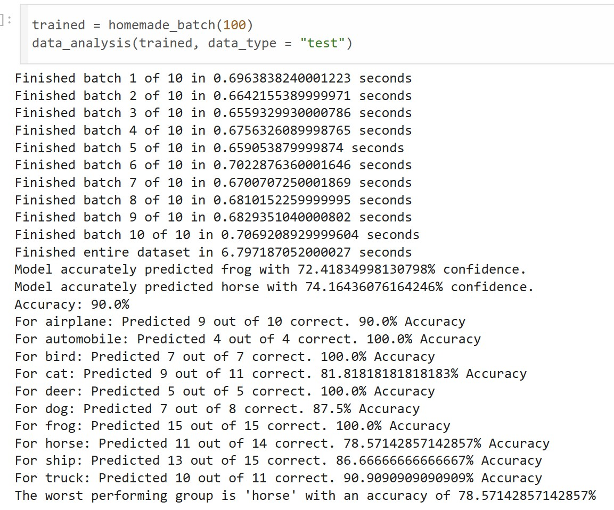Okay, so what are we really looking at? Before fine-tuning this model, it still performed very well. It had an 88% accuracy, but performed quite poorly when it came to predicting what a dog is, with just 66.66% accuracy. After training the model, it had a 2% improvement in overall accuracy, increasing to 90% overall. We should note that even though the accuracy of predicting dogs shot up to 87.5%, but the worst performing group actually had a better accuracy before training. After fine-tuning, horses were predicted with a 78.57% accuracy, but it was at 84.62% before!
To be fair, we only trained this model on 1000 images and for 2 epochs, even though we have 50,000 images at our disposal in the training set. Let's increase how many images we use to train the model, as well as the number of epochs. Let's test its accuracy on more images as well.
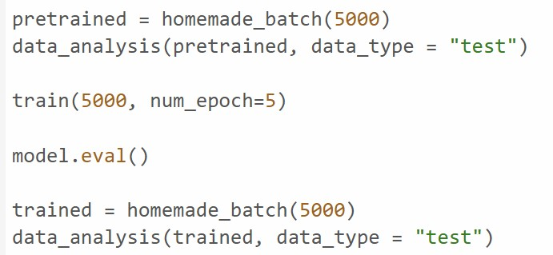Before fine-tuning
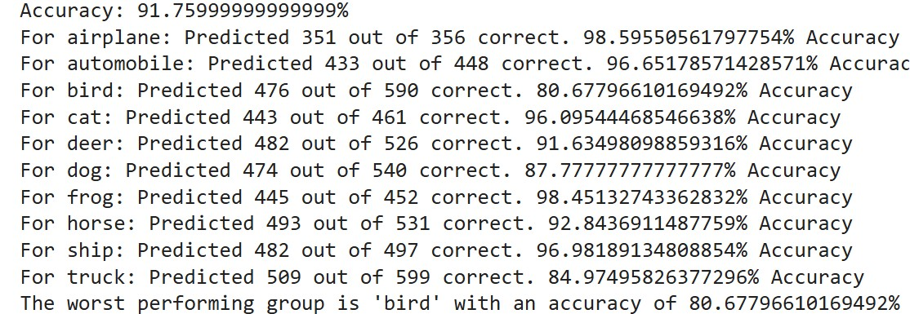Fine-tune
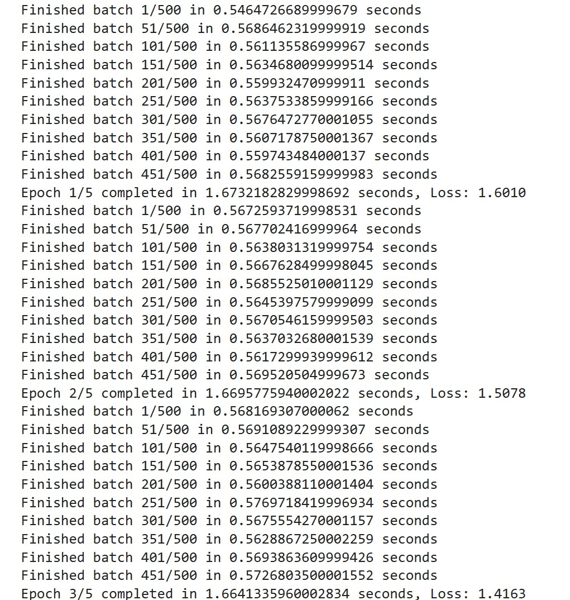After fine-tuning
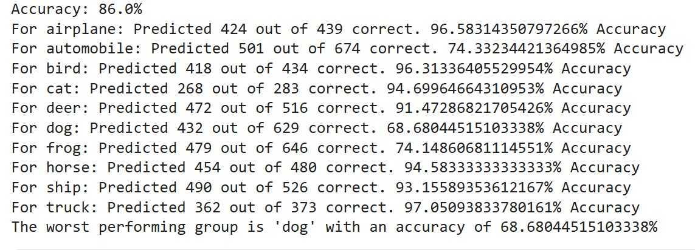And... after roughly 2 hours of training, what happened? The model performed significantly worse! If I had to guess, I would assume that 5 epochs was enough time for the model to overfit the data provided, even if it was 5000 images. That really is a shame, given that I used 2 different Google accounts to get enough T4 GPU computing credits to even go through this entire process (you can run the large training batch on just one account, I just messed up several times). Is this how it ends? You can only fine-tune this model in small batches?
But overfitting is the strongest opponent in history... would you lose?
If I had a super powerful computer, I would just ramp up the training set to 50,000. But I am a random college student. And I am NOT paying for computing credits. My workaround? Just shuffle the training set before every epoch to ensure that there's more randomness in the input data.
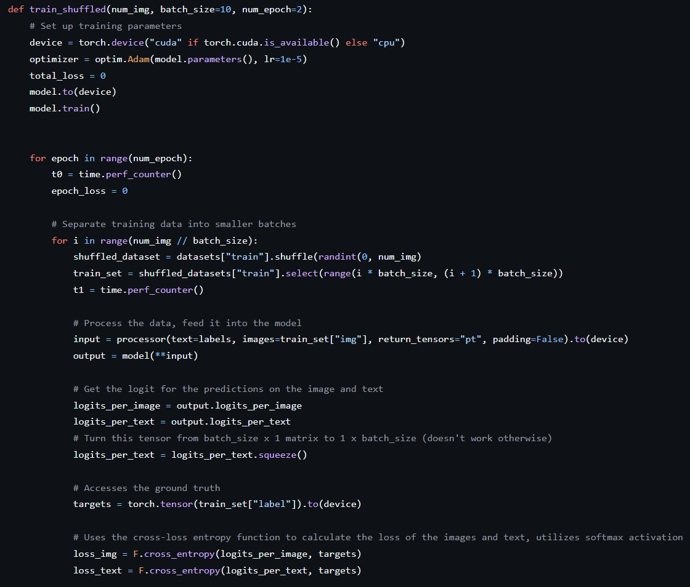And voilà! We're done! It should work in theory, but I haven't tested it yet. And you need to import random. Thanks for sticking around!